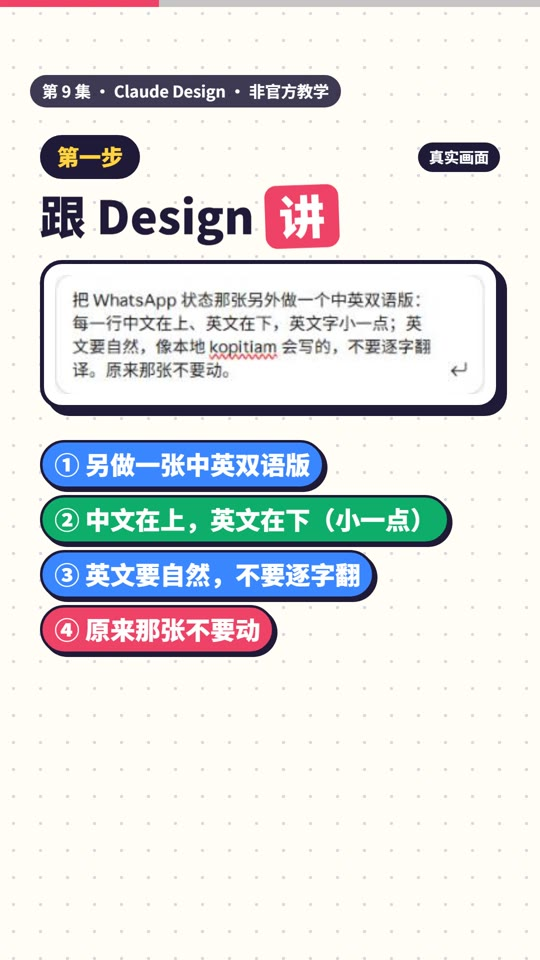
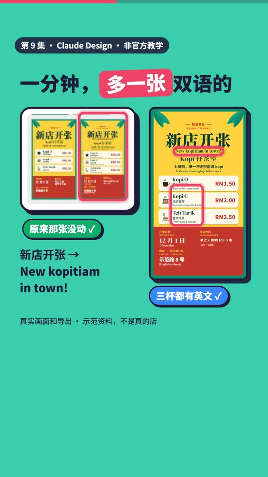
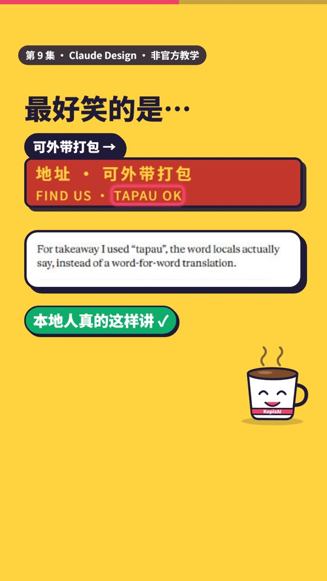
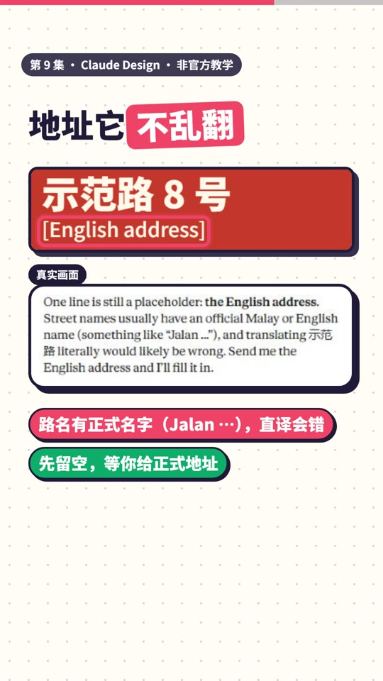
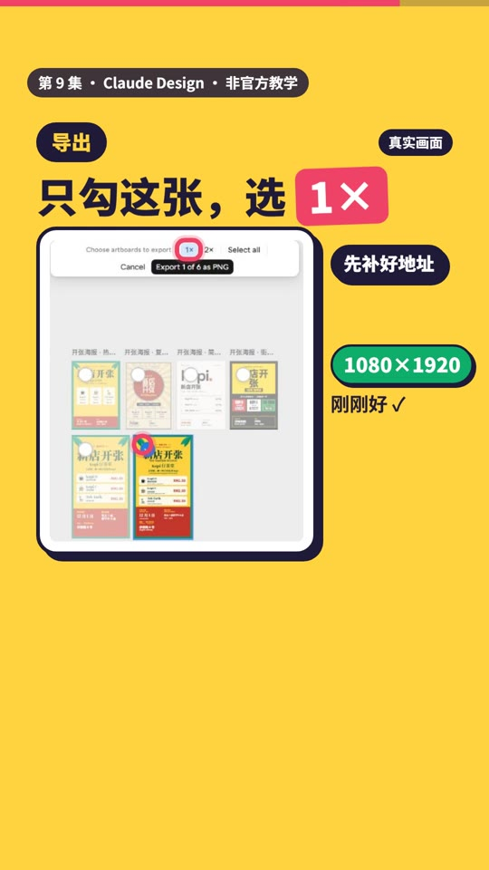
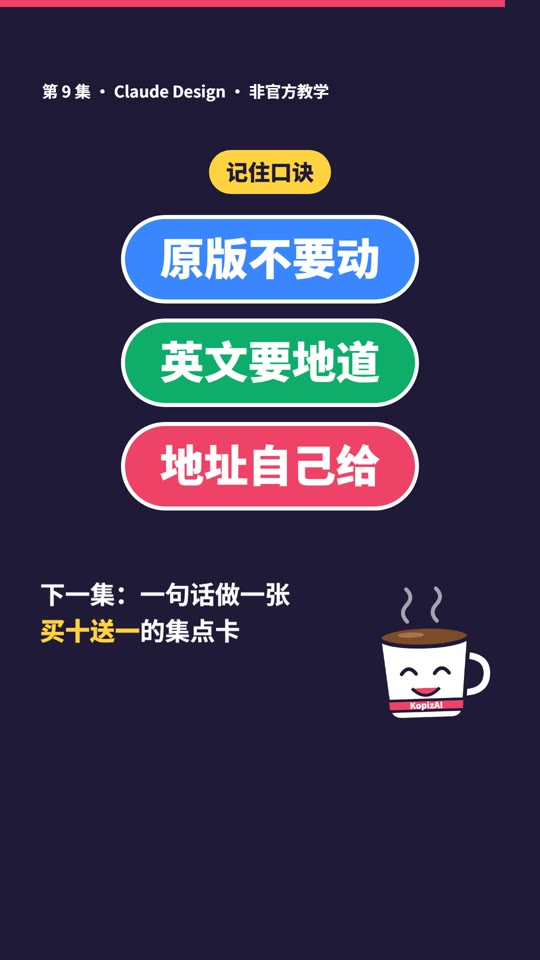

第 9 集 · 同一张海报，一句话改成中英双语
一句话： 叫 Design 另做一张中英双语版，讲明英文要自然、不要逐字翻译，原来那张不要动。英文地址自己给。
对照官方文档和真实界面核对日期：2026-11-16 ｜ 时长 59 秒 ｜ 非官方教学
为什么要做双语
海报只有中文，隔壁 office 不懂中文的同事、路过的顾客就看不懂。中英双语一张就照顾到两边。
跟着做
第一步：在同一个设计里讲清楚（视频 00:04）
- 另做一张中英双语版（不是改原来那张）
- 怎么排：每行中文在上、英文在下，英文字小一点
- 英文要自然：像本地 kopitiam 会写的，不要逐字翻译
- 原来那张不要动
可以直接复制：
把 WhatsApp 状态那张另外做一个中英双语版：每一行中文在上、英文在下，英文字小一点；英文要自然，像本地 kopitiam 会写的，不要逐字翻译。原来那张不要动。
（"WhatsApp 状态那张"换成你要改的那一张。）

结果：旁边多一张双语的（视频 00:18）
我们这次一分钟左右，原来那张旁边多了一张，原来那张没有变。每行中文下面多一行小字英文；为了放得下，它把标题和饮料名缩小了一点。"新店开张"它写成 New kopitiam in town!，三杯饮料下面都有英文说明。

英文不是逐字翻译（视频 00:26）
"可外带打包"它没有硬翻，写的是 TAPAU OK。它在回复里说，这是本地人真的会讲的词。

地址它不乱翻，要你自己给（视频 00:33）
英文地址它留成 "[English address]"。它说马来西亚的路名通常有正式的马来文或英文名字（像 "Jalan ..."），直接翻译多半会错，所以请你把正式地址发给它。直接回它一句"英文地址是 ＿＿"就可以。

第二步：补好地址，导出时只勾双语那张（视频 00:43）
Share → Export → PNG。它默认勾第一张，要先取消，再勾双语那张；清晰度选 1×，按钮会写 "Export 1 of 6 as PNG"（数字看你画布上有几张）。我们导出来刚好 1080×1920，一张图直接下载。

口诀
原版不要动，英文要地道，地址自己给。

时间点
| 时间 | 内容 |
|---|---|
| 00:00 | 海报只有中文，office 同事看不懂 |
| 00:04 | 跟 Design 讲：另做双语版、怎么排、英文要自然、原版不要动 |
| 00:18 | 一分钟左右，多一张双语的 |
| 00:26 | 可外带打包 → TAPAU OK |
| 00:33 | 地址它不乱翻，先留空 |
| 00:43 | 导出：只勾这张，选 1× |
| 00:49 | 口诀，下一集预告 |
顺便知道
- 视频里的店名、价钱、地址都是示范资料，不是真的店；"示范路"没有正式英文名，所以我们没有补英文地址。
- 英文写得好不好，还是要自己看一遍。这次它在回复里列了中英对照表，对照着看很快。
- 另做一张、原版不动的做法，第 7 集也用过。
来源：Claude 帮助中心《Get started with Claude Design》，以及 2026 年 11 月 claude.ai 的实际操作 https://support.claude.com/en/articles/14604416-get-started-with-claude-design